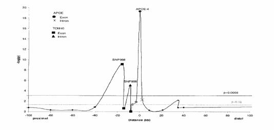
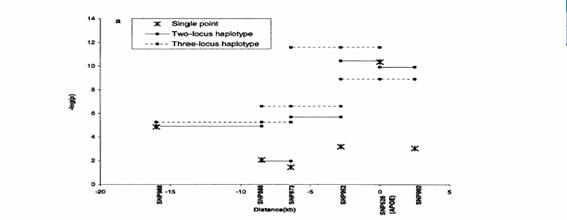
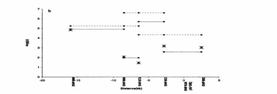
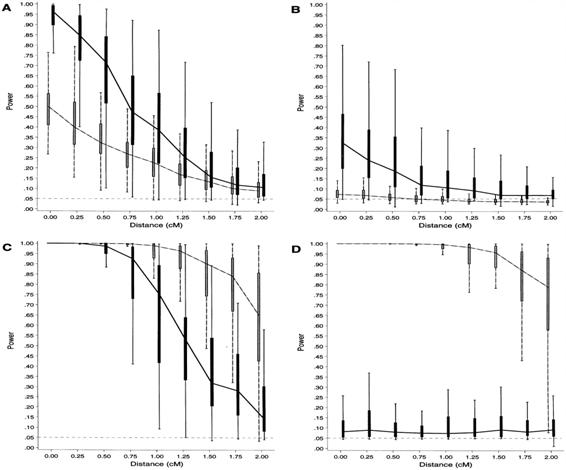

3-5
複数点解析
3-5-1マッピング(有意相関SNPが検出された場合のLinkage
Disequilibrium mapping、Hardy-Weinberg不平衡mappingの手順)
全体の流れ
1
前後SNP地図を作る
2
前後SNPを分類する
3
検定有意水準マップを作る
ゲノムワイドスクリーニングで相関が有意となったsingle SNPをSNP Xと呼ぶこととする。
各ステップ詳細
1. 前後SNP地図を作る
考慮すべきことは、
(1)範囲の設定
mappingに有用なLDが認められる範囲
LDが認められる範囲の推定
一般論からの類推(default範囲とする)
SNP
X周囲の既知のLDから推定
(2)SNPの出所
東京大学医科学研究所/JST SNP db
新規SNP
discoveryを行う
以上を実現するための具体的な作業内容は以下のようになる。
Default範囲(前後50kb＊ずつ)の既知SNPを東京大学医科学研究所/JST
SNP dbから抽出する。
Default範囲(前後50kbずつ)で、かつ東京大学医科学研究所/JSTプロジェクトがスクリーニングしていない部分に関して、
SNPdiscoveryを行う。Repeat-Maskerを“Do
not mask simple repeats and low complexity DNA”の設定にした上で、該当領域のスクリーニング対象を設定し、SNPdiscoveryを行う。
Default範囲の全SNPについてLDの概数が得られるだけのタイピングを行う。(但し、SNP
XとのLDの程度に関わらず、範囲内の全SNPにつき全サンプルのタイピングをするのであれば、ステップ2は無意味となる。)
当該領域固有のLDの広がりについての情報が得られるので、その情報を基にさらに広い範囲のSNP地図の作成が必要であると判断されたら、その範囲について東京大学医科学研究所/JST
SNP dbを検索し、また新規SNP discoveryを行う。
2. 前後SNPを分類する
上記1にてSNP X周囲のSNP地図とそれらのLDの程度についての情報がある。この情報により周囲SNPは以下の2群に大別される。今、前後SNPをSNP
Yと呼ぶ事とする。
(1)
SNP
Xを解析上有意と判断される程度のLD(D’＞0.57：論拠は“3-3-2-3-5
参考 連鎖不平衡の実際及び間接関連検出用のSNPマーカーと真のローカスとの関係について”)をもつSNP Y
(2)
SNP
Xを解析上有意と判断される程度のLDをもたないSNP Y
(1)
SNP
Xを解析上有意と判断される程度のLDをもつSNP Y の説明
これは真の疾患ローカス(D)とSNP XとSNP Yとが1つのancestral haplotypeを形成していた場合に相当する
SNP X-SNP Y-D
SNP X-D-SNP Y
D-SNP X-SNP Y
の3通りの並び方が考えられる。
(2)
SNP
Xを解析上有意と判断される程度のLDをもたないSNP Yの説明
疾患ローカス(D)は複数の疾患ハプロタイプによって構成されていることが必要である。SNP
X の疾患アレルと連鎖しているアレル(疾患アレル)が作るハプロタイプがその一つで、第2の疾患ハプロタイプに疾患ローカス・アレルとSNP Yの疾患アレルとが乗っていることになる。
この場合の疾患ローカス(D)は、ある遺伝子として定義されその中に2ヶ所の多型が存在することもあるし、おそらくそれよりはるかに低い確率で、ある遺伝子の1ヶ所の多型が2つの異なる疾患アレルを有することもあり得ない話ではなく、またその第2の例のバリエーションであるが異なる2つの疾患ancestral
haplotypeがたまたま、疾患ローカス遺伝子の同一部位に同一の多型アレルを持っていたという可能性もやはり不可能ではない。2つの疾患ハプロタイプは、
SNP X-D
SNP Y-D
と、表記できる。
従って理論的にはSNP Xと連鎖しているSNP Yのみでなく、連鎖していないSNP
Yも多人数でタイピングすることが必要であるが、連鎖していないSNP Yの場合には検定で統計的有意差を得る可能性は相当程度低いことが容易に予想される。
しかしながら疾患ancestral haplotypeが非常に限定される“いわゆる遺伝病(発症率に民族差や地域差があることが普通で、疾患ローカス数も１つないしは極めてそれに近いような疾患)”においてはこのようなSNP
Xと連鎖していないSNP Yが疾患ローカスと連鎖不平衡にある可能性がほとんどないことに比べれば、common diseaseの場合には無視できないレベルかもしれないと言える。
3.
検定有意水準マップを作る(添付図参照)
大別して2種類の互いに独立した2検定
(1)
ケース・コントロール相関検定
(ER Martin et al. Am J Hum
①
p＝0.0008 20 0 p＝0.05 -100kb
Distance
100kb
1 SNP ケース・コントロール相関
②
14
Haplotype ケース・コントロール相関(真のローカスが解析に含まれる)
0
7
(真のローカスが解析に含まれない)
0 0 -20kb
Distance
5kb
(2)
Hardy-Weinberg
平衡検定
(DM Nielsen et al. Am J Hum Gent
63:1531-1540,(1999))
一般的にHardy-Weinberg 平衡はLDよりも急峻に減衰することが知られている。また遺伝形式がはっきりしない場合(優性・劣性などではない場合)にはそもそも有意な不平衡が認められていない場合も多いことに留意する必要がある。
なお、(1)はケースとコントロールの両方のデータを用いた検定であり、(2)はケースのデータのみを用いた検定である。両者が揃って疾患ローカスの存在を当該SNPの周辺に認めれば、独立の2解析がその仮説を支持することになり、有力である。
カウンタ